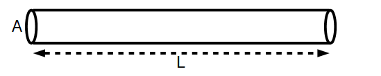

Digression on the Flyswatter's Transformer
This section is kind of long -- so I moved it to this other page. Also if you are a mathematician, my "calculations" might appear appallingly crude. In my defense, I had no measurement tools other than my eyes available when I did this analysis, and so cannot justify a much more rigourous treatment. Nevertheless, we proceed.
Just by looking, we can see how all these parts are connected. Though we don't know the configuration of the transformer yet, we know that it has the following pin connections: one directly to the 3V supply, one to the 3V supply through a 3k3 resistor, one to the first capacitor of the voltage multiplier, and two to the transistor. Next, using the multimeter to measure the transformer's pin to pin resistances, we are further able to determine a probable configuration. Below is a summary of those measurements:
As seen in the graphic, the resistance tests determine the electrical connections of the coils. This doesn't mean a whole lot on its own, but combined with physical measurements of the core and knowledge of the resistivity of the wire used, we can estimate the length of the wires making up each coil, and thus the number of turns, and the inductance.
The coils between pins 3 and 4, and pins 1 and 5 appear to be wound with the same gauge wire, which to me looks to be no smaller than 30AWG or so. The other coil, between 3 and 2 is unfortunately too hard to see from the outside, so I can't tell. But we can use other aspects of the transformer geometry to determine what we have.
Let's take a leap and assume that most of the volume of the transformer windings is taken up by the 250 ohm winding, and further that the ratio of copper to empty space is the ratio of the area of a circle with diameter a to a square with side length a, that is pi/4. This is the approximate situation:

Where:
\[V_{copper} \approx l \cdot(W^2 - W_c^2)\cdot\frac{\pi}{4}\]The length of the copper wire can be determined if the cross sectional area is known:
with
\[L = \frac{V}{A}\]And with resistance defined as:
\[R = \rho \frac{L}{A}\]Combining the second two equations gives R in terms of V and A. Expressing V in terms of the coil and core geometry yields an expression for A:
\[R = \rho \frac{V/A}{A} = \rho \frac{V}{A^2} = \rho \frac{\pi l\cdot (W^2 - W_c^2)}{4 A^2}\] \[\therefore A = \sqrt{\frac{\rho \pi l \cdot(W^2-W_c^2)}{4 R}}\]Further, an expression for the diameter of the wire can be obtained:
\[D = \left [ \frac{4 \rho l \cdot(W^2-W_c^2)}{\pi R}\right ]^{1/4}\]That's nice, but it's probably a better idea to just use Matlab. The script below helps determine (among other things) the approximate values for wire gauge, number of turns and inductance:

Note that I totally guessed the relative permeability of the ferrite core -- it could be anything from like 20 up to several hundred. At any rate, this gives us an approximate wire gauge of 43AWG, a turn count of like 1500, and an inductance of like 750mH. There is a lot that can make this not true -- but it at least gives us an idea that the inductance of that coil is in the 100s of mH range, to maybe several Henries.
The other coils then, which appear to be made of the same wire gauge, with the same series resistance, must have similar characteristics. Now, for an increase in AWG # by 10, the increase in resistance is 10 times. That's an approximately 26% increase in resistance per step in AWG. This means 43 AWG should have a resistance approximately 20 times that of 30AWG. Since 43 AWG wire has about 2 ohms per foot resistance, 30AWG is expected to have around 100m ohms for the same length. Since the mean coil length is near an inch, that translates to 12 or so turns for every 100m ohms. This implies 60 turns if we are to trust our 500m ohm resistance measurement... which I don't. However, it is also unknown what the actual length of each turn is, so I'm postulating we have anywhere from 10 to 100 turns. That gives an inductance range from like 30uH to 3mH.
Note that I am ignoring any nonlinearity of the core material, which is generally unwise. But remember, All we are trying to do at this point is investigate why this thing works -- if it turns out that the simulation doesn't work, it is likely that transformer saturation is necessary to operation. More on this might appear later.